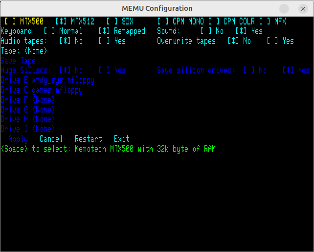
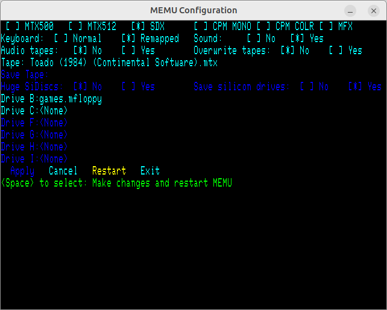

- Memotech EMUlator
Contents
Introduction
The Memotech MTX series of computers
were superior 8-bit computers of the 1980s. Although initially supplied with a ROM BASIC later
addons included disk drives of various formats, which could be accessed from extensions to the
ROM BASIC or the system could boot CP/M 2.2. The definitive source of information about Memotech
computers is
Dave Stevenson's site.
MEMU is a full featured emulator of the MTX systems originally written by
Andy Key. Andy's version of MEMU is available for Microsoft Windows or Linux from
here. Discussion of MEMU can be found
here.
This code is a fork of Andy's original to include some additional features and support
different patforms. This release currently supports:
- Raspberry Pi Pico: This has the main features of MEMU, but size constraints
require omitting some features. Each display is shown full screen.
- Linux X-Window: This uses multiple GUI windows to display Memotech screens and
dialogs. (TODO: Produce a version that supports Wayland.)
- Linux Framebuffer: This does not require a GUI. Instead each display is shown
full-screen and it is necessary to toggle between screens.
- Raspberry Pi: Although the Linux versions run perfectly well on Raspberry Pi,
this version uses the GPU for display updating, and can use the GPIOs to interface
to real hardware. (TODO: The GPU access used is not supported by
recent versions of Raspberry Pi OS. Produce an X-Window version with GPIO support.)
- Bare Metal Pi: Uses the Circle
library to produce versions of MEMU that run bare-metal on a Raspberry Pi.
(TODO: This is using an old version of Circle that does not support
all Raspberry Pi versions. Update or abandon?)
- Microsoft Windows: Does not have DART or Network emulation.
The full (Linux) version of MEMU provides just about complete emulation of the
original hardware, including:
- Up to 576K of RAM
- Up to 8 banked ROMs, each with sub-pages
- Video Display Processor (VDP, TMS9929A)
- 80-column display (both colour and monochrome modes)
- Tape interface
- Floppy disks
- Silicon disks
- Counter Timer Chip (CTC)
- Dual serial ports (DART)
It provides emulation of some modern hardware add-ons:
-
MFX - Multi-Function eXpansion providing SD card storage, VGA 80-column and
VDP display (using an FPGA), ROM BASIC enhancements.
-
CFX-II providing Compact Flash storage, Propeller VGA 80-column and VDP display
(using Parallax Propeller chip), ROM BASIC enhancements
-
NFX network interface based upon a Wiznet W5100 chip
There are also features to assist Z80 software development and debugging:
- Visual monitor and debugger - trace and single step code
- CPU and video RAM displays
- Extensive and configurable diagnostic reporting
Discussion of MEMU can be found
here.
Building
Raspberry Pi Pico Build
Hardware Requirements:
- Raspberry Pi Pico with headers
- Pimoroni Pico VGA Demo Base
- VGA Monitor
- VGA Cable
- USB keyboard - Not all keyboards work with tinyusb. A cheap one may be best
- USB to Micro-USB adaptor to connect the keyboard to the Pico
- 5V Power Supply with Micro-USB connector
- Micro-SD Card
- Optional: Headphones or Amplified Speakers
It is recommended that the code be compiled on a Raspberry Pi. This is the only build
that has been tested.
wget https://raw.githubusercontent.com/raspberrypi/pico-setup/master/pico_setup.sh
chmod +x pico_setup.sh
./pico_setup.sh
Reboot to complete setup. Log back in, then:
cd pico
git clone https://github.com/Memotech-Bill/MEMU.git
cd MEMU
mkdir build-pico
cd build-pico
cmake -DTARGET=Pico ..
make
The MEMU folder should be at the same level as the pico-sdk and pico-extras folders:
- pico
- pico-sdk
- pico-extras
- MEMU
- docs
- src
- run_time
- build-pico
The resulting memu-pico.uf2 file can then be copied onto the Pico, or the memu-pico.elf
file loaded using the debug connector on the Pico. See
"Getting Started with Raspberry Pi Pico".
The hardware is configured as follows:
- Copy the contents of the "run_time" folder to the root of a FAT formatted SD card.
- Plug the Pico into the VGA Demo Base.
- Connect the keyboard to the USB socket on the Pico.
- Connect the Power Supply to the USB socket on the VGA Demo Base.
- Connect the Monitor.
- Insert the SD card into the socket on the VGA Demo Base.
- If used, connect the headphones or speaker to the DAC socket on the VGA Demo Base
(not the PWM) socket.
Linux Builds
The following pre-requisites are required when building on a Raspberry Pi:
- build-essentials
- cmake
- libx11-dev (for the X-Window build)
- portaudio19-dev
To build the X-Window version of MEMU (for use with GUI):
git clone https://github.com/Memotech-Bill/MEMU.git
cd MEMU
mkdir build-x
cd build-x
cmake -DTARGET=XWin ..
make
To build the Framebuffer version of MEMU (for use without a GUI):
git clone https://github.com/Memotech-Bill/MEMU.git
cd MEMU
mkdir build-fb
cd build-fb
cmake -DTARGET=FBuf ..
make
To build the experimental SDL3 version of MEMU (for Wayland support):
git clone https://github.com/libsdl-org/SDL.git
cd SDL
git checkout release-3.2.0
cd ..
git clone https://github.com/Memotech-Bill/MEMU.git
cd MEMU
mkdir build-sdl
cd build-sdl
cmake -DTARGET=SDL ..
make
Alternately, to build against a copy of SDL3 installed by a package manager:
git clone https://github.com/Memotech-Bill/MEMU.git
cd MEMU
mkdir build-sdl
cd build-sdl
cmake -DSDL_SHARED=Y -DTARGET=SDL ..
make
Note: The framebuffer version is intended for use from the console keyboard
and screen. It will not work over an SSH connection.
The executables "memu-x" or "memu-fb" should be in the ../run_time folder. For older
versions of CMake, they may either be in the root of the build folder, or in the
"src/memu" sub-folder. Copy the executable into the root of the "run_time" folder.
The Linux version of MEMU will run on many single-board computers such as the Raspberry
Pi. On such systems, the use of GPIO to connect to real hardware is potentially useful,
so this has been re-implemented as an optional feature of the Linux builds, using standard
Linux software interfaces. To enable this feature, add the following switches to the
cmake line of the Linux build instructions:
- -DHWGPIO=Y - To enable use of GPIO pins on the device.
- -DHW_23017=Y - To enable use of GPIO pins on an I2C attached MCP23017 GPIO
expansion.
To use GPIO attached hardware, it is necessary to use the switch -hw-config
when starting MEMU to give the name of a file specifying the hardware attached.
Obsolete Raspberry Pi Build
The Linux builds of MEMU (documented above) will compile and run on any version of
Raspberry Pi. The original Raspberry Pi build (documented below) had two additional
features:
- Used the VideoCore GPU to provide scaling of the MEMU displays.
- Used GPIO to allow MEMU to interface with real hardware.
The software interfaces used to implement these features have been obsoleted by
recent versions of Raspberry Pi OS, and are not available at all for the Raspberry Pi 5.
The GPIO interface as been re-implemented using standard Linux system calls (see above)
which should work on all models of Raspberry Pi with a recent operating system.
This build is intended to be run from an operating system, typically "Raspberry Pi OS".
It does not require a GUI, instead it uses the VideoCore IV GPU to display full screen.
This build must be done on a Raspberry Pi, as the VideoCore libraries are required.
To build this version of MEMU:
git clone https://github.com/Memotech-Bill/MEMU.git
cd MEMU
mkdir build-rpi
cd build-rpi
cmake -DTARGET=RPi ..
make
The "memu-pi" executable should be in the ../run_time folder. For older
versions of CMake, it may either be in the root of the build-rpi folder, or in the
"src/memu" sub-folder. Copy the executable into the root of the "run_time" folder.
Notes:
This build uses the VideoCore GPU to compose the display. It therefore requires
use of the old FKMS driver, not the new KMS driver. Therefore edit the file
"/config.txt"
- If the line "dtoverlay=vc4-kms-v3d" is present, comment it out.
- Insert the line "dtoverlay=vc4-fkms-v3d"
The display must be connected to one of the outputs controlled by the VideoCore
(e.g. HDMI), and the keyboard attached to a USB port. This version will not work
over an SSH connection. Use memu-x for that.
Bare-Metal Raspberry Pi Build
The bare-metal version of MEMU relies upon the
Circle bare-metal programming environment
for the Raspberry Pi. It has been tested with release 43.3 of Circle.
It is necessary to build a version of MEMU specific to the type of Raspberry Pi it
is to run on as outlined in the following table:
| RPI | Executable | Models | Optimized for |
|---|
| 1 | kernel.img | A, B, A+, B+, Zero, (CM) | ARM1176JZF-S |
| 2 | kernel7.img | 2, 3, (CM3) | Cortex-A7 |
| 3 | kernel8-32.img | 3, (CM3) | Cortex-A53 |
| 4 | kernel7l.img | 4B, 400, CM4 | Cortex-A72 |
To build a Circle version of MEMU, run the following commands, where the ? is
replaced by a number (1 to 4) from the first column of the above table, according
to the Raspberry Pi version required:
git clone https://github.com/Memotech-Bill/MEMU.git
git clone --depth 1 --branch Step43.3 https://github.com/rsta2/circle.git
cd MEMU
mkdir build-circle
cd build-circle
cmake -DTARGET=Circle -DRPI=? ..
make
If required it is possible to create multiple build folders (e.g. "build-circle1"
to "build-circle4") and build programs for each version of Raspberry Pi.
Installation requires an SD or SDHC card formatted with a FAT partition as the
first or only partition. Copy into this partition:
- The contents of the "/boot" partition from a "Raspberry Pi OS" installation
- The contents of the "MEMU/run-time" folder
- The "MEMU/build-circle*/kernel*.img" file or files from the builds for the
different Raspberry Pi versions required
Windows Build
Requirements:
Download and configure the portaudio code:
git clone https://github.com/PortAudio/portaudio.git
cd portaudio
git checkout tags/v19.7.0
cd ..
Download and build the MEMU source code:
git clone https://github.com/Memotech-Bill/MEMU.git
cd MEMU
mkdir build-win
cd build-win
cmake -DTARGET=Win ..
cmake --build . --config Release
Alternately, to build the experimental SDL3 version of MEMU:
git clone https://github.com/libsdl-org/SDL.git
cd SDL
git checkout release-3.2.0
cd ..
git clone https://github.com/Memotech-Bill/MEMU.git
cd MEMU
mkdir build-sdl
cd build-sdl
cmake -DTARGET=SDL ..
cmake --build . --config Release
Usage
Basic Usage
If MEMU is started without any command line arguments, it will usually start in whichever
emulation mode it was last used in. When first installed that will be emulating a
Memotech MTX512 running ROM BASIC.
For instructions on using MEMU as a Memotech, please read the Memotech manuals, copies
of which can be found
here.
For versions of MEMU (FBuf, RPi, Circle) which use the full screen to display each MTX
screen (VDP, CP/M ...) use keys <Ctrl+F1>, <Ctrl+F2> etc. to switch between
each screen.
To configure MEMU for different emulation modes, open the configuration screen or window.
Because different operating environments capture different keys, a number of different key
presses may be used to open this screen:
- The <SysRq> key.
- Either of the "Meta", "GUI" or "Windows" keys. (Different names for the same keys.)
- The "Applications" or "Menu" key.
- The <F11> key.

Use the arrow keys to navigate the options and either <space> or <Enter> to
select an option. The <Esc> key can be used to exit sub-menus.
The top row of the screen is used to select the basic emulation mode:
- MTX500
- 32K RAM, ROM BASIC, 40 column VDP display, Tape interface
- MTX512
- 64K RAM, ROM BASIC, 40 column VDP display, Tape interface
- SDX
- 512K RAM, ROM BASIC, 40 column VDP display, Single disk drive (type07, 640KB)
- CPM MONO
- 576K RAM, CP/M & ROM BASIC, 40 column VDP display, 80 column monochrome display,
Two type07 disk drives, Four Silicon Drives (optional)
- CPM COLR
- 576K RAM, CP/M & ROM BASIC, 40 column VDP display, 80 column colour display,
Two type07 disk drives, Four Silicon Drives (optional)
- MFX
- 576K RAM, CP/M & ROM BASIC, 40 column VDP display, 80 column VGA display,
SD Card emulation (up to 8 CPM drive images), Four Silicon Drives (optional).
Note: This does not include emulation of the WizNet network interface on the
real MFX card. The windows version of MEMU cannot currently emulate this. While
the Linux version can emulate the WizNet, either the program would need to be
run as root to be able to open the ports for FTP or HTTP, or the port numbers
would need to be re-mapped to high (unprivilaged) values. Command line switches
may be ussed to enable this emulation for the Linux version.
The body of the screen is used to provide details:
- Keyboard Remapping
- Remapping adjusts for differences between the Memotech keyboard layout and modern
keyboards. It is usually most convenient to have remapping enabled, but this will
not work for programs with their own keyboard drivers. See the section
Keyboard for more details.
- Sound
- Generation of sound may be turned on or off.
- Tapes
- For the emulator, most program tapes are supplied in a binary format (*.mtx).
These will load quickly. However for use with real hardware, tapes may be
in the format of audio files (*.wav). These can also be loaded into the emulator
and will take a realistic time to load. To prevent accidental overwriting
of existing programs, overwriting can be disabled. The file names for tapes to
be loaded or saved can be selected.
- Silicon Disks
- In real hardware, silicon disks loose their contents when turned off. To emulate
this, saving the contents of silicon disks on exiting MEMU can be disabled. For
the real hardware, silicon disks were limited to a maximum of 8MB. However,
one modern game by Andy Key
requires more storage. Therefore to enable this to be run in MEMU, he extended
the simulated silicon disk interface to support much larger capacities.
The lowest line on the screen provides some brief help. The line above is used to
exit the configuration:
- Apply
- Makes the requested changes and returns to the existing emulation. Only changes
to the tape or floppy disks may be made.
- Cancel
- Returns to the existing emulation without making any changes.
- Restart
- Restarts the emulation in the requested mode. The new configuration is written
to the configuration file so that MEMU will start in the new mode next time it is
used.
- Exit
- Exits MEMU. In bare-metal versions it will be necessary to reset the processor
to restart the program.
In order to be used by MEMU, disk images should be
placed in the "disks" sub-folder below the folder containing MEMU and the configuration
files. Similarly, tapes should be placed in the "tapes" sub-folder. This repository
only contains a few example tape and disk image files. Many more can be obtained from:
Typical configuration for SDX emulation
The image below shows a typical configuration for SDX emulation, with a tape file ready
for loading with the command LOAD "", and a disk of games available for
USER LOAD "game". Any user programs can be saved with USER SAVE "name"

Typical configuration for CP/M emulation
A typical configuration for CP/M emulation, with two floppy disks, is shown below.
Disk Images
MEMU is not able to directly access files stored by the operating system. Instead the program reads files
that are are binary copies of the contents of CP/M disks. To access the CP/M files on
a modern PC you need to use a program which understands the CP/M disk format.
The traditional set of programs for that is cpmtools.
For most Linux distributions they can be installed using the distribution's package manager.
Versions for Microsoft Windows can be downloaded from here.
Cpmtools requires a disk definition file which defines the exact layout of the disk image. Andy Key's
website provides a disk definition file for all the
Memotech disk formats.
The two most commonly used formats with the MEMU emulator are:
- memotech-type07 - The 640KB double sided / double density floppy disk.
- memotech-type18 - The 8MB format used for silicon disks and modern CF or SD
storage expansions for the Memotech.
Cpmtools are traditional command line utilities. To make the CP/M images more accessible
on modern machines, Andy has also developed software whicch enables the CP/M image to be
mounted and accessed using standard GUI file managers. These are:
An empty disk image can be preduced by creating an empty file, mounting it as a disk
in MEMU, then using one of the Memotech utilities to format the drive. Once formatted,
close MEMU and use one of the above tools to copy files into the image.
For the real CFX-II or MFX interfaces, the CF or SD media can store up to eight
images of 8MB CP/M disks. With MEMU, eight separate image files may be specified, one
for each of the 8MB CP/M disks. Alternately, a single large file containing a complete
image of the storage media may be given as the first file name. The media image may
optionally include data for HexTrain beyond the CP/M disk images, and / or include an
MBR partition table. With Linux it is even possible to specify a media device containing
physical media from a Memotech
Advanced Usage
MEMU configuration is controlled by a large number of option flags or switches. These
may be either in configuration files or specified on the command line.
For bare-metal systems the configuration will be specified in files "memu0.cfg" and
"memu.cfg" in the root of the storage media.
For systems with an operating system, if MEMU is started without any command line options,
then it will read the configuration from two files "memu0.cfg" and "memu.cfg".
MEMU now looks first for "memu.cfg" in the current folder. If found, it will read
configuration from "memu0.cfg" (if it exists) and "memu.cfg" in the current folder.
This allows for folder specific customisation if required. If there is no "memu.cfg" in the
current folder, then "memu0.cfg" and "memu.cfg" from the same folder as the program
executable is used.
The contents of the "memu0.cfg" file remain constant, while the "memu.cfg" file is
re-written by the interactive configuration screen.
If there are any options specified on the command line, then the above configuration
files will not be read automatically. Command line options may be used to read these
(or other) configuration files.
When specifying file or folder path names, the following special macros may be used
to specify the starting folder for a path;
- ~C - The folder containing the configuration files.
- ~E - The folder containing the MEMU executable.
- ~H - The users home folder (or can just use ~).
- ~W - The folder in which MEMU is started.
By default, relative paths are taken from the folder containing the configuration.
The following options are supported on all versions of MEMU:
- -help
- Show a short summary of the options and then exit MEMU.
- -ignore
- Ignore options for features that are not implemented. It allows versions with
fewer features (such as the Pico version) to use a configuration file intended
for a more fully featured version. The options must still be syntacticly correct.
- -config-file file
- Read configuration options from the specified file. The option may be repeated
to read multiple configuration files. The last configuration file specified is used
to save changes made from the configuration screen.
- -no-ignore-faults
- In order to make the program more robust, reading from a configuration file
disables checking for a couple of faults in Z80 programs being run (accessing
invalid I/O ports, and incompletely initialised file control block). This
option re-enables those checks.
- -mem-blocks n
- Number of 16KB memory blocks emulated (default 4)
- -mem-mtx500
- equivalent to -mem-blocks 2
- -vid-win
- Enable emulating VDP and TV using a graphical window
- -mon-win
- Emulate the 80 column card display using a graphical window
- -mon-win-mono
- Emulate the 80-column display as green screen monochrome (instead of colour)
- -mon-no-ignore-init
- don't ignore writes to non-emulated registers
- -kbd-remap
- Enables remapping of keyboard
- -kbd-country n
- sets the country code switches to n (default 0)
- -snd-portaudio,-s
- Emulate sound chip (using portaudio on Linux & Windows)
- -snd-latency value
- Instruct portaudio to use a given latency
- -disk-dir dir
- Specify the directory containing disk images
- -tape-dir dir
- Specify the directory containing tape files
- -tape-overwrite
- SAVE can overwrite an existing file
- -tape-disable
- Disable rapid loading of binary (*.mtx) tape files. This enables loading
of audio (*.wav) files. Binary (*.mtx) files are loaded by converting them
back to audio.
- -cassette-in
- MTX or WAV file to load
- -cassette-out
- MTX or WAV file to save
- -sdx-mfloppy file
- specify .mfloppy file in SDX first drive
- -sdx-mfloppy2 file
- specify .mfloppy file in SDX second drive
- -rom-enable rom_bits
- Bit flags to enable (1) or disable (0) the Z80 accessing the ROMS in each
of the ROM banks in the address range 0x2000 to 0x3FFF.
- -sdx-tracks n
- specify tracks of first drive (default 80)
- -sdx-tracks2 n
- specify tracks of second drive (default 80)
- -prn-file file
- specify file to receive printer output
- -speed hz
- set CPU speed (default is 4000000, ie: 4MHz. Pico default: 4.8MHz)
- file.mtx
- subsequent LOAD/SAVE/VERIFY "" will use this file
The following options are supported on the Linux and Microsoft Windows versions:
- -romX file
- Load banked ROM X image from an 8MB file
- -rompairX file
- Load banked ROM X and ROM X+1 a 16MB file
- -largerom selector file
- Optionally load the system ROM (0-8K) and / or any of the banked ROMS (8-16K)
specified by the characters (S,0-7) in the selector string from a single 32KB file.
- -vid-win-hw-palette
- -mfx
- Show the emulated MFX display.
- Use an alternate palette for the emulation of the VDP display.
- -sidisc-huge
- enable Silicon Disk huge mode
- -sidisc-no-save
- don't save Silicon Disk content on termination
- -sidisc-file n file
- specify Silicon Disk content for a drive
- -cfx2 rom_file
- enable CFX-II emulation and specify ROM image file
- -vga
- emulate Propeller VGA display (enabled by default for CFX-II)
- -cf-image c:p file
- specify data image for partition (p) on card (c)
- -sd-type type
- set the type of SD card to emulate (SDv1, SDv2, SDHC)
- -sd-image p file
- specify image for CP/M drive (p) on SD card
- -no-cfx2 rom_file
- Disable CFX-II emulation but remember the ROM image file name.
- -iobyte iobyte
- Specify the MTX memory mapping (IOBYTE, initially 0x00)
- -addr addr
- Set the address for loading data or starting execution (initially 0x0000)
- -n-subpages rom n
- The banked ROMS may also have sub-pages. Set number of subpages for a bank
- -subpage subpage
- Set ROM subpage for loading memory (initially 0)
- -mem file
- Load file into memory at address
- -rompairX file
- load a file into an adjacent pair of ROM banks X and X+1. If the file is more
than 16KB, then load it into successive sub-pages.
- -vid-ntsc
- refresh at 60Hz (instead of 50Hz)
- -mon-console,-mc
- emulate 80 column card using console only
- -mon-console-nokey
- keyboard status shows no keys pressed
- -kbd-type string
- auto type keys in this string
- -kbd-type-file fn
- auto type keys in this file
- -joy,-j
- enable joystick support
- -joy-buttons string
- define left,right,up,down and fire buttons
- -joy-central n
- percentage off-centre to press direction
- -tap-file fn
- specify ZX tape file (default memu.tap)
- -sna-file fn
- specify ZX snapshot file (default memu.sna)
- -cpm
- emulate CP/M BDOS
- -cpm-drive-a path
- where CP/M BDOS finds A: files (default: .)
- -cpm-invert-case
- invert between CP/M and host filenames
- -cpm-tail tail
- construct CP/M command tail
- -cpm-open-hack
- don't insist on EX,S1,S2,RC being 0
- -sdx
- SDX support in ROM 5 (or -sdx3 for ROM 3)
- -fdxb
- FDXB CP/M support
- -fast
- don't limit speed, run as fast as possible
- -run-no-interrupts
- Disable interrupts when loading a RUN file via the command line option.
This was default on Andy's MEMU but is not consistent with USER RUN
on a real MTX. Only has any effect if SDX is not being emulated (loading
a game into memory of an emulated MTX). If SDX emulation is enabled, then
the effect of typing a USER RUN command is explicitly emulated.
- file.com tail ...
- -cpm -iobyte 0x80 -addr 0x0100 -mem file.com
- file.run
- -iobyte 0x00 -addr 0xAAAA (from header)
The following options only have any effect for resizeable windows (X-Window or
Microsoft Windows):
- -vid-win-big,-v
- Increase the size of the VDP window. Repeat to further enlarge.
- -vid-win-max
- VDP window the largest size that will fit on the screen.
- -mon-win-big,-mw
- Increase the size of the 80-column display. Repeat to further enlarge.
- -mon-size N
- Sets the size of the 80-column display (but does not enable it).
- -mon-win-max
- Maximises the size of the 80-column display (but does not enable it).
- -mfx-size
- Sets the size of the MFX display. Negative values remember the size
without enabling the display.
- -mfx-max
- Show the emulated MFX display using a maximum size window.
- -vid-win-title
- set title for VDP window
- -vid-win-display
- set display to use for VDP window
- -mon-win-title
- set title for 80 column window
- -mon-win-display
- set display to use for 80 column window
The following options are currently for the Linux versions only:
- -serial1-dev dev
- serial 1 in/out from device
- -serial1-in fn
- serial 1 input from file/pipe
- -serial1-out fn
- serial 1 output to file/pipe
- -serial2-dev dev
- serial 2 in/out from device
- -serial2-in fn
- serial 2 input from file/pipe
- -serial2-out fn
- serial 2 output to file/pipe
- -nfx-port-offset off
- offset to add to NFX port numbers
The Raspberry Pi versions of MEMU (either the with OS or bare-metal versions)
may be attached to real hardware: a Memotech keyboard, a Kempston style joystick,
or a Centronics printer via the Raspberry Pi GPIO connections. The following option
is used to enable this:
- -hw-config filename
- Specifies a separate filename describing the hardware configuration. The format
of this file differs from the other configuration options and is described
here.
The Raspberry Pi build has one further option to control the use of the GPU:
- -gpu-mode mode
- Specifies the display upscaling mode to use:
- Perform upscaling in software (on the ARM CPU)
- GPU upscaling with interpolation. This can result in a blurred display
- GPU upscaling without interpolation. This is the default mode
Keyboard
The layout of the MTX keyboard (illustrated above) differs somewhat from that of
typical modern keyboards.
The two unlabelled keys either side of the space bar are reset keys. Pressing both
simultaneously resets the MTX. In MEMU this is emulated by simultaneously pressing
the <Alt> and <Alt Gr> keys to reset the emulated MTX.
One difference that causes a few problems is that there are a few symbols which have
different shift states compared to modern keyboards. MEMU translates each key press
into pressing the corresponding key on the emulated MTX keyboard. However, for these
symbols the wrong shift state will be selected.
The original solution to this was to require typing a different key to produce the
required symbol, as follows:
| To produce symbol | Type the following key |
|---|
| ^ | = |
| : | # |
| @ | ' (quote) |
| = | ^ (shift 6) |
| ' (quote) | @ (shift quote) |
| # | £ (shift 3) |
| ` (back quote) | (shift back quote) |
To improve on this, the emulation is modified slightly compared to the original
hardware. The MTX keyboard is wired as an 8x10 matrix. However the keyboard only
has 77 keys (plus the two reset keys). Thus there are three gaps in the matrix.
The emulation fills these three spaces with three new keys which have most of the
above symbols at shift states corresponding to modern keyboards. These new pseudo
keys are:
| Drive Line | Sense Line | Unshifted symbol | Shifted Symbol |
|---|
| 4 | 8 | = | ^ |
| 5 | 8 | ' | @ |
| 6 | 8 | # | : |
If keyboard remapping is enabled, and <Shift Lock> is set on the keyboard
then pressing one of these symbols on the keyboard activates one of these new keys
in the emulation rather than the original keys. The BASIC and CP/M ROMs are patched
to recognise these new keys. However any programs with their own keyboard drivers
will not know about these new keys and so will not work properly. Turning off
<Scroll Lock> reverts to using the original MTX key mapping.
It is still necessary to press <Shift> to produce a back-quote symbol, but
this is rarely needed.
The cursor keys on the keyboard are mapped onto the MTX cursor keys as expected,
and the other navigation keys are:
| Keyboard | MTX Key |
|---|
| Insert | Ins |
| Delete | Del |
| Home | Home |
| End | EOL |
| Page Up | Page |
| Page Down | Cls |
For game playing, the physical layout of the keys is often important. For this
reason, by default MEMU maps the top left portion of the keypad onto the MTX keypad
as shown.
| PC Keypad | MTX Keypad |
|---|
| Normal | Shifted | Normal | Shifted |
|---|
| Num Lock | | Page | 7 |
| / | | EOL | 8 |
| * | | Break | 9 |
| Home | 7 | Tab | 4 |
| Up | 8 | Up | 5 |
| Page Up | 9 | Del | 6 |
| Left | 4 | Left | 1 |
| | 5 | Home | 2 |
| Right | 6 | Right | 3 |
| End | 1 | Ins | 0 |
| Down | 2 | Down | . (Decimal) |
| Page Down | 3 | Cls | Ent |
However this again results in some of the keys not having the effect indicated by
the keycap. The <F12> key toggles the "Num Lock" LED. If this is illuminated
then the the key mapping is changed to correspond to the labels on the keycaps.
In particular the keys produce the expected numbers when the shift key is pressed.
The <Num Lock> key can not be used for the toggle as it is part of the keypad
mapping.
On versions of MEMU where each display is shown full screen, ideally use the combination
of the <Alt> key and a function key to select the different displays. Unfortunately
in some environments the operating system grabs those key combinations. In that case use
the left <Ctrl> key in combination with a function key. To send a <Ctrl> and
function key to a program running on MEMU, use the right <Ctrl> key.
MEMU Visual Debugger
The MEMU Visual Debugger is a machine code inspector and debugger similar to the
MTX PANEL command or the CP/M VDEB utility. However it offers a number of advantages
over those tools:
- It has a separate display window / screen, so that does not corrupt the normal
VDU or Monitor displays, simplifying the debugging of display code.
- It does not depend upon Z80 interrupts, so it can be used to debug interrupt code.
- It does not occupy any Z80 memory, leaving all memory free for the program being
tested.
- It can follow code in all MTX ROMS.
- It has more advanced features for stepping through Z80 code.
To open the Visual Debugger, press and hold the <F9> key and press the "h" key.
Visual Debugger commands are invoked by pressing the key corresponding to the capital
letter of the command.
Break
Sets an address at which program execution will halt. Enter the required address
as a hex number, and type <Return>. It is now possible to specify a specific ROM
number or RAM page for the break. To do this type the two hex digit PAGE port selector
(e.g. 40 for ROM 4, or 01 for RAM page 1), followed by a colon and then the address
within that page. For example, to set a break at the start of the CRSPR routine enter
10:3E09. The page selector does not have to exactly match that specified for the break
to occur, as long as they both point to the same location. Thus within the ROM region
the RAM bits are ignored, while within RAM the ROM bits are ignored. If no page selector
is specified, the current PAGE value is assumed.
When prompted for the Break Condition (COND>) there are a number of options:
- Just type <Return>. This will create an unconditional break point. Execution
will halt every time this address is reached, until the break point is manually
cleared.
- Type N= followed by a number in hex. Execution will only halt when this address
has been reached the specified number of times. This break point will then be
automatically cleared.
- Type a register name (single register or pair) followed by an equals sign and then
a value in hex (e.g. "HL=0123" or "B'=C0"). Execution will then stop at this
address every time the specified register has the specified value.
Note that the Break command can only set one break condition at each address. However
there may be breaks set for a number of different addresses.
Clear
Clears a break condition set at a specified address.
Display
Displays a block of memory starting at the specified address. The values starting at
this location may then be changed by typing two digit hex values followed by <Return>.
Use <Esc> to stop editing values.
Go
Starts program execution at specified address. If no address is specified (just
<Return>) then start at the current value of the program counter (i.e continue
execution). Optionally ("TO>" prompt) specify an address where execution is to halt
again. The halt address may include a page specifier, as for the Break command.
Invert
Toggle between displaying memory in hex or ASCII.
List
List machine code starting at a specified address. If an address is specified, then the
listing will remain fixed, starting at this address. If no address is given, then the
listing will start at the location of the program counter, and will be updated whenever
the program counter leaves the displayed listing.
Next
Sets a temporary break point at the next instruction, and then starts execution.
- For most instructions this will have the effect of single-stepping.
- It will treat most CALL instructions as a single step. This will fail if the
subroutine call instruction is followed by parameter bytes (see the Trace command).
- For loops formed by the DJNZ instruction or other conditional jumps, it will run
until the end of the loop.
Profile
Toggles on and off collection of an execution profile.
When turned on, all the counts are reset to zero, and a count of the number of instructions
executed is shown to the right of the prompt line.
When turned off, the number of times each instruction was executed since profiling was
turned on is saved to a file with the name "Profile_<date>_<time>.txt" in
the current folder, with the format:
Address Count
DBFD - DC00 1920
FC65 - FC6D 1542
FC6F - FC71 1536
FE1D - FE1E 450
DD20 - DD22 290
DE53 - DE55 241
DE58 - DE61 228
DE64 - DE67 227
Quit
Quits the Visual Debugger. The window will be closed and all breakpoints will be inactive
until the Visual Debugger is re-opened.
Register
Updates the value of the register pair pointed to by the register cursor. This cursor is
moved by the stop "." key. Note that there is one step in the cycle when no register is
selected.
Step
Executes a single machine code instruction then updates the display.
Trace
For most machine code instructions, this is the same as "Step". For a subroutine call
(one that is taken for a conditional call), execute until a return statement brings the
stack pointer back to the current value. For most subroutines, this will execute the routine
as a single step, even if the call is followed by parameter bytes. It will fail if the
routine does not finish with a return statement (e.g. finishes with "JP (HL)").
eXit
Attempts to exit the current subroutine. Works by running until a return statement is
executed with the stack pointer at the current value. This will usually work if you have
just mistakenly stepped into a routine you are not interested in. It will fail if there
have been mis-matched PUSH and POP statements since the subroutine call.
Diagnostics
Diagnostic Options
MEMU includes many diagnostic features to assist developing and debugging Z80 code.
Most of these are activated by the following additional options on the command line or
in a configuration file:
- -diag-console
- Log diagnostic information to the console. Cannot be used with -mon-th as this would
cause the diagnostic information to interfere with the text mode screen output.
- -diag-file
- Append diagnostic information to a file called memu.log.
- -diag-file=filename
- As above, but to file of your choice.
- -diag-ring
- Log diagnostic information to a ring buffer in memory. When MEMU terminates, dump
this to memu.ring. A great way to avoid filling the disk with memu.log when all you care
about is recent activity prior to failure.
- -diag-ring=filename
- As above, but to file of your choice.
- -diag-time
- Precede all diagnostic messages by a timestamp.
- -diag-win-unknown-key
- Displays host operating system specific keycodes typed in the windows which are not
recognised by MEMUs window handling code. These will be X Window KeySym values or Windows
virtual keycodes. Recognised values are passed on to the emulation of the MTX
keyboard.
- -diag-win-hw
- Show communication with low-level devices.
- -diag-win
- Turn on all diagnostic options with names starting with -diag-win
- -diag-mem-iobyte
- Show when the IOBYTE is written to.
- -diag-mem-subpage
- Show when the ROM subpage register is written to.
- -diag-mem-dump
- When the program terminates, write the Z80 address space to a file called
memu.mem.
- -diag-mem
- Turn on all diagnostic options with names starting with -diag-mem.
- -diag-vid-status
- Show when the VDP status register is read.
- -diag-vid-registers
- Show when VDP registers are written to.
- -diag-vid-address
- Show when the VDP address register is set, and whether for read or write.
- -diag-vid-data
- Show all data transferred to/from the VDP memory. Tries to log the data in formats
allowing you to recognise which graphics data is being uploaded. Will cause a lot of
logging.
- -diag-vid-refresh
- Show when the VDP screen is repainted to the Window on the host screen. This is the
point at which the VDP interrupt bit becomes set.
- -diag-vid-markers
- Show additional markers on the Window. One is a line which moves down the screen, one
pixel per frame, which can be observed to see if time is progressing smoothly in the
emulation. Another shows on which scan lines there are >=5 sprites.
- -vid-time-check parm
- Set the parameters for performing timing checks on VDP access. The parameter consists
of three values, separated by commas, giving:
- Required Z80 T-states between VDP accesses during vertical blanking (default 8).
- Required Z80 T-states between VDP accesses during active video (default 32).
- Duration of vertical blanking in Z80 T-states (default 30769).
- -diag-vid-time-check
- Perform VDP timing sanity checks.
- -diag-vid-time-check-abort
- Terminate if timing check fails.
- -diag-vid-time-check-drop
- Fail to store the data in VRAM, or return 0xff, if timing check fails.
- -diag-vid
- Turn on all diagnostic options with names starting with -diag-vid.
- -diag-kbd-win-key
- Show recognised key presses and releases in the VDP window which are not
understood.
- -diag-kbd-drive
- Show keyboard drive values returned.
- -diag-kbd-sense
- Show keyboard drive and sense values returned.
- -diag-kbd-auto-type
- Show the workings of the auto-type mechanism.
- -diag-kbd-remap
- Show diagnostics relating to the keyboard remapping feature.
- -diag-kbd-hw
- Show communication with low-level device.
- -diag-kbd
- Turn on all diagnostic options with names starting with -diag-kbd.
- -diag-joy-init
- Show joystick initialisation messages.
- -diag-joy-usage
- Show joystick messages generated as joystick data is read.
- -diag-joy
- Turn on all diagnostics options with names starting with -diag-joy.
- -diag-dart-ports
- Show accesses to DART ports.
- -diag-dart-config
- Show DART configuration.
- -diag-dart-data
- Show DART data transfer.
- -diag-dart-hw
- Show communication with low-level hardware.
- -diag-dart
- Turn on all diagnostics options with names starting with -diag-dart.
- -diag-snd-registers
- Show accesses to the sound chip registers.
- -diag-snd-latency
- Show information relating to the latency parameters passed to PortAudio.
- -diag-snd-init
- Don't suppress stderr during Pa_Initialize() call.
- -diag-snd
- Turn on all diagnostic options with names starting with -diag-snd.
- -diag-ctc-registers
- Show when CTC registers are written to.
- -diag-ctc-pending
- Show when an interrupt becomes pending on a channel.
- -diag-ctc-interrupt
- Show when the fact the interrupt is pending is communicated to the Z80 chip.
- -diag-ctc
- Turn on all diagnostic options with names starting with -diag-ctc.
- -diag-mon-hw
- Show diagnostics relating to the hardware level emulation of the 6845 CRTC card and
underlying memory.
- -diag-mon-kbd-win-key
- Show recognised key presses and releases sent to 80-column window. Only applies if
-mon-win is being used.
- -diag-mon-kbd-map-th
- Show keycodes read from TH. Only applies if -mon-th is being used.
- -diag-mon
- Turn on all diagnostic options with names starting with -diag-mon.
- -diag-sdxfdc-port
- Turn on all diagnostic relating to SDX FDC port access.
- -diag-sdxfdc-hw
- Turn on all diagnostic relating to SDX FDC hardware.
- -diag-sdxfdc-data
- Turn on all diagnostic relating to SDX FDC data.
- -diag-sdxfdc-status
- Turn on all diagnostic relating to SDX FDC status.
- -diag-sdxfdc
- Turn on all diagnostic options with names starting with -diag-sdxfdc.
- -diag-sidisc-file
- Turn on all diagnostic relating to Silicon Disc file reading and writing.
- -diag-sidisc-address
- Turn on all diagnostic relating to Silicon Disc sector address control.
- -diag-sidisc-data
- Turn on all diagnostic relating to Silicon Disc data transfer.
- -diag-sidisc
- Turn on all diagnostic options with names starting with -diag-sidisc.
- -diag-print
- Show characters that are printed.
- -diag-spec-ports
- Log accesses to Speculator ports.
- -diag-spec-interrupts
- Log things relating to Speculator interrupts.
- -diag-spec
- Turn on all diagnostic options with names starting with -diag-spec.
- -diag-cpm-driver
- Log all calls to driver code in high memory.
- -diag-cpm-cbios
- Log all calls to CBIOS routines.
- -diag-cpm-bdos-file
- Log all calls to CP/M BDOS relating to file access.
- -diag-cpm-bdos-other
- Log other calls to CP/M BDOS.
- -diag-cpm-bdos
- Turn on all diagnostic options with names starting with -diag-cpm-bdos.
- -diag-cpm
- Turn on all diagnostic options with names starting with -diag-cpm.
- -diag-z80-instructions
- Log CPU registers and disassemble instruction prior to executing each
instruction. Will cause a lot of logging.
- -diag-z80-instructions-exclude from-to
- Turn off logging CPU registers and disassemble instructions for instructions at
addresses between from and to (eg: 0x0000-0x3fff).
- -diag-z80-instructions-include from-to
- Turn on logging CPU registers and disassemble instructions for instructions at
addresses between from and to.
- -diag-z80-interrupts
- Log when the Z80 takes an interrupt, and show the peripheral supplied low byte of the
vector table address.
- -diag-z80-time
- Include timing information in the Z80 instructions logged.
- -diag-z80
- Turn on all diagnostic options with names starting with -diag-z80 (except
-diag-z80-instructions-exclude).
- -diag-bad-port-display
- Display when unemulated ports are accessed.
- -diag-bad-port-ignore
- Do not halt MEMU when certain unemulated ports are accessed. By default, termination
happens for ports which are known to be used by particular hardware.
- -diag-bad-port
- Turn on all diagnostic options with names starting with -diag-bad-port.
- -diag-tape
- Diagnostics relating to the MTX BASIC LOAD/SAVE/VERIFY commands. It also shows
diagnostics relating to the Z ZX Spectrum LOAD/SAVE/VERIFY commands.
- -diag-speed
- Every second, output an estimate of the emulated chip speed. If running with -fast
this could be much higher than 4MHz. If running with -mon-console and the program waits
for keyboard input, because the simulation is suspended this could to drop to near
zero.
- -diag-vga-mode
- Report configuration of the emulated Propeller VGA display for different modes.
- -diag-vga-port
- Report access of ports used by the Propeller VGA display.
- -diag-vga-refresh
- Report refresh of the VGA display screen.
- -diag-vga
- Enable all the -diag-vga options.
- -diag-node-pkt-tx
- Log all NODE network packets transmitted.
- -diag-node-pkt-rx
- Log all NODE network packets received.
- -diag-node
- Enable all NODE network logging.
- -diag-log-type
- Log text entered into MEMU.
- -diag-chip-log
- Log diagnostic messages from programs running on MEMU.
- -diag-nfx_port
- Log data written to or read from Z80 ports on NFX board.
- -diag-nfx_reg
- Log data written to or read from Wiznet registers.
- -diag-nfx_event
- Log events on network connection sockets.
- -diag-nfx_data
- Log data sent or received over network.
- -diag-nfx
- Enable all NFX diagnostics.
- -diag-init
- Log MEMU initialisation
- -diag-exit
- Display the reason for the termination of MEMU.
- -diag-all
- Turn on all of the above (except -diag-console and -diag-file).
Run Time Diagnostics
A number of these diagnostics (and other features) may be turned on or off at run-time
by pressing the <F9> key and a letter (the <F9> acting as a kind of shift
key) as follows:
- F9+a
- Toggles accelerated mode
- F9+b
- Toggles -diag-mem-iobyte
- F9+c
- Toggles -diag-console
- F9+d
- Dump memory to memu.mem
- F9+f
- Toggles -diag-cpm-bdos-file
- F9+h
- Opens the Visual Debugger
- F9+i
- Toggles -diag-z80-interrupts
- F9+k
- Toggles -diag-kbd-sense
- F9+l
- Loads ZX snapshot file, as specified by -sna-file
- F9+m
- Toggles -diag-speed
- F9+p
- Toggles -diag-bad-port-display
- F9+q
- Toggles -diag-bad-port-ignore
- F9+r
- Dumps a snapshot of the Z80 registers
- F9+s
- Saves ZX snapshot file, as specified by -sna-file
- F9+t
- Rewinds to the start of a ZX tape file
- F9+v
- Dumps a snapshot of the VDP registers
- F9+n
- Dumps the VDP to "memuNNNNNN.vdp". This writes 16KB VRAM, 8 register bytes,
and 1 status register byte.
- F9+o
- Toggles auto VDP dump mode on or off
- F9+w
- Snapshots the VDP screen to "memuNNNNNN.bmp"
- F9+x
- Toggles auto VDP snapshot mode on or off
- F9+y
- Toggles -diag-spec-ports
- F9+z
- Toggles -diag-z80-instructions
Diagnostic Windows
In addition to the above, MEMU supports three diagnostic windows:
- -diag-ui-mem
- The Memu Memory Inspector window allows you to specify
an IOBYTE (and ROM subpage) and then to show what the Z80
processor sees at various addresses.
- i - focus on the IOBYTE
- u - focus on the ROM subpage
- s - focus on the start address
- p - focus on the highlighted address
- t - focus on the data table
- o - take a RAM snapshot
- v - toggle whether current or snapshot RAM is shown
- Tab - move focus
- Left,Right,Up,Down,PageUp,PageDown - move the highlighted address
- hex digits - edit the value where the cursor is
- -diag-ui-vram
- The Memu VRAM Inspector window allows you to show
the contents of VRAM.
- s - focus on the start address
- p - focus on the highlighted address
- t - focus on the data table
- Tab - move focus
- Left,Right,Up,Down,PageUp,PageDown - move the highlighted address
- hex digits - edit the value where the cursor is
- -diag-ui-dis
- The Memu Disassembly Inspector window allows you to
specify an IOBYTE (and ROM subpage) and disassemble the code
seen by the Z80 at various addresses.
- i - focus on the IOBYTE
- u - focus on the ROM subpage
- s - focus on the start address
- Tab - move focus
- j - jump to indicated address
- k or Right - push current listing, list from indicated address
- l - toggle display of illegal instruction information
- m - toggle MTX specific disassembly
- Escape or Left - pop to previous listing
- Up,Down,PageUp,PageDown - move the highlighted address
When an instruction references (ie: jumps or calls) another
address, an indication is given to the right of the
instruction where the jump or call will go.
MEMU has a special RAM snapshot feature.
First, you tell MEMU how many of the RAM pages are to be included in
the snapshot using the -mem-blocks-snapshot N command line
argument.
N is the number of 16KB RAM pages.
This number is normally 0, but might reasonably be 4 when debugging.
MEMU takes a snapshot just before the Z80 is started, and if
you're running a RUN file from the MEMU command line,
just before it is given control.
In the Memu Memory Inspector window colours communicate the
following:
- blue - no memory present here
- magenta - ROM
- cyan - RAM, but not a part that has a snapshot
- green - RAM, which matches the snapshot
- white - RAM, different to the snapshot
Pressing o takes a new snapshot.
Pressing v toggles whether you are looking at the
current value, or the value in the snapshot.
Hardware Configuration
If the optional feature of using GPIO to attach real hardware to MEMU
is enabled, then it is necessary to provide a hardware configuration
file to describe the attachments.
The hardware configuration file consists of blocks defining a particular
interface, introduced by a name in square brackets, followed by the
definition of that interface.
Pin Definitions
Most of the hardware definition file is defining which digital I/O pins
connected to what hardware. These may be built in GPIO pins, or there is
also support for one or more MCP23017 I2C port expanders.
These pin definitions take the form:
GPIO, <gpiochip device>, <GPIO number>
MCP23017, <I2C device>, <I2C address>, <MPC pin number>
Where:
- <gpiochip device&>
- The device name of the gpiochip device used, for example /dev/gpiochip0.
- <GPIO number>
- The number of the GPIO on the device.
- <I2C device>
- The device name of the I2C bus used. This will typically be /dev/i2c-1 on more
recent Raspberry Pis
- <I2C address>
- The I2C address of the port expander. This will typically be 0x20, although up to
8 simultaneous port expanders on different addresses are supported.
- <MPC pin number>
- he number of the pin on the port expander. This may either be a number in the range
0-15, or a letter and number in the ranges A0-A7 or B0-B7.
Keyboard
This block of the configuration file is used to define the connection of a MTX matrix
keyboard or equivalent. It takes the form:
[keyboard]
kb0 = <pin definition>
:
kb9 = <pin definition>
dr0 = <pin definition>
:
dr7 = <pin definition>
reset = <pin definition>
reset2 = <pin definition>
dr_reset = <gnd | dr0-dr7>
The lines kb0 kb9 define the 10 keyboard sense lines, and the lines dr0-dr7 define
the 8 keyboard drive lines.
For an unmodified MTX keyboard, the reset line defines the I/O pin that one of the
keyboard reset lines is connected to. The other reset line should be connected to ground
(0v). In that case the reset2 and dr_reset lines would be omitted.
The MTX keyboard may be modified by soldering an additional connection to the track
joining the two reset keys. In that case both the existing keyboard reset lines should
be connected to IO pins, and defined by the reset and reset2 lines. The additional
connection between the reset keys should either be connected to ground (0v) or to one
of the keyboard drive lines. The dr_reset line specifies how this is connected (gnd is
the default).
Joysticks
If a matrix keyboard is fitted, then Atari style joysticks may be connected to the
drive and sense lines, in parallel with the keyboard, as per the MTX. In that case
no joystick definition is required. Alternately, the separate joystick switches may
be connected to I/O pins, and the common connection to ground, as per earlier versions
of MEMU-Pi. In that case, the joystick connections are defined by a block of the form:
[joystick_1]
left = <pin definition>
right = <pin definition>
up = <pin definition>
down = <pin definition>
fire = <pin definition>
The second joystick, if fitted, is defined similarly in a [joystick_2] block.
Printer
A Centronics style printer port may be provided. It should be noted that the Centronics
connector uses 5v logic, while the Raspberry Pi GPIO connections are only 3.3v and are not
5v tolerant. Therefore some form of level shifting is required, Probably the simplest
solution is to use an MCP23017 powered from 5v, but the I2C pullup resistors taken to 3.3v.
The printer hardware block takes the form:
[printer]
d0 = <pin definition>
:
d7 = <pin definition>
strobe = <pin definition>
busy = <pin definition>
error = <pin definition>
pe = <pin definition>
slct = <pin definition>
Parallel Input/Output Port
ote that the MTX PIO port is 5v logic while the Raspberry Pi GPIO connections are only 3.3v
tolerant. Also it is not practical to implement the INSTB and OTSTB lines in software. HCT244,
HCT245 or HCT373 are examples of devices that could provide an OTSTB function and 3.3v to 5v
step-up (not HC chips). A HC373 or HCT373 are examples that could provide INSTB, but the
outputs would need resistor dividers to connect to the Raspberry Pi GPIO. The PIO hardware
definition block takes the form:
[pio]
pot0 = <pin definition>
:
pot0 = <pin definition>
pin0 = <pin definition>
:
pin7 = <pin definition>